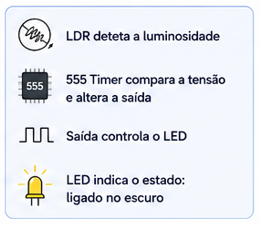
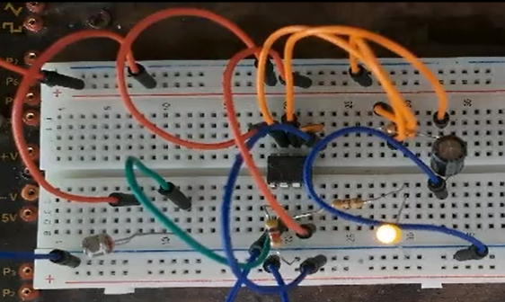

Práticas Laboratoriais 2
Circuito que reconhece a ausência de luz.
Unidade curricular
Práticas Laboratoriais em EEIC 2
Ano
1.º ano, 2.º semestre · 2022/23
Equipa
2 elementos

Um circuito que reconhece a ausência de luz: quando a luz incide no LDR, o LED apaga e na escuridão, o LED acende. A aplicação natural é acender luzes automaticamente ao anoitecer, ou em caso de emergência.
O funcionamento do circuito baseia-se na variação da resistência do LDR (Light Dependent Resistor) em função da luminosidade. Quando existe muita luz, a resistência do LDR é baixa. À medida que a iluminação diminui, a sua resistência aumenta.
Quando escurece, a divisão de tensão entre o LDR e a resistência R3 é alterada, provocando uma diminuição da tensão aplicada ao pino Trigger do temporizador 555 e um aumento da tensão no pino Reset.
Assim, a saída do temporizador gera uma onda quadrada, que faz com que o LED acenda.


Demonstração do funcionamento em laboratório.